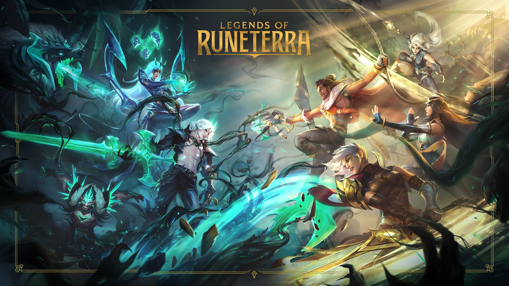

Legends of Runeterra
Legends of Runeterra or LOR is the digital collectible card game created in 2020. It was developed and published by Riot Games and is inspired by games such as Magic The Gathering. The game is set within the League of Legends Univerise and has many of the same characters from the games as well as Lore. It was desgined for Pc as well as mobile devices.
